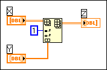
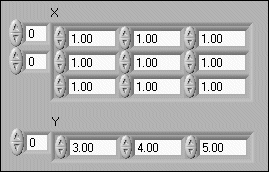
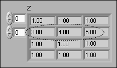
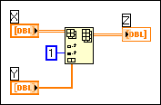
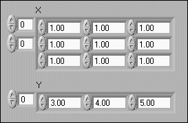
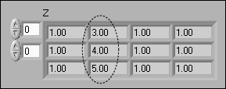

Use the index input of an Insert Into Array function to tell LabVIEW what type of subarray to insert into the input array. The index input works similarly for the Delete From Array function.
For example, if the first index is wired, LabVIEW inserts a row, or set of rows, into the input array. If the second index is wired, LabVIEW inserts a column, and so on. If you wire more than one indexing input, LabVIEW does not know what kind of subarray to insert or delete.
To correct this error, remove the wires from all but one of the index inputs to the function.
In the following block diagram, the 1D subarray Y is inserted between rows 0 and 1 of the 2D array X.
If the input into the previous block diagram is
The output will be
However, if the second index input is wired as in the following block diagram, LabVIEW inserts Y between columns 0 and 1 of array X.
If the input into the previous block diagram is
The output will be
